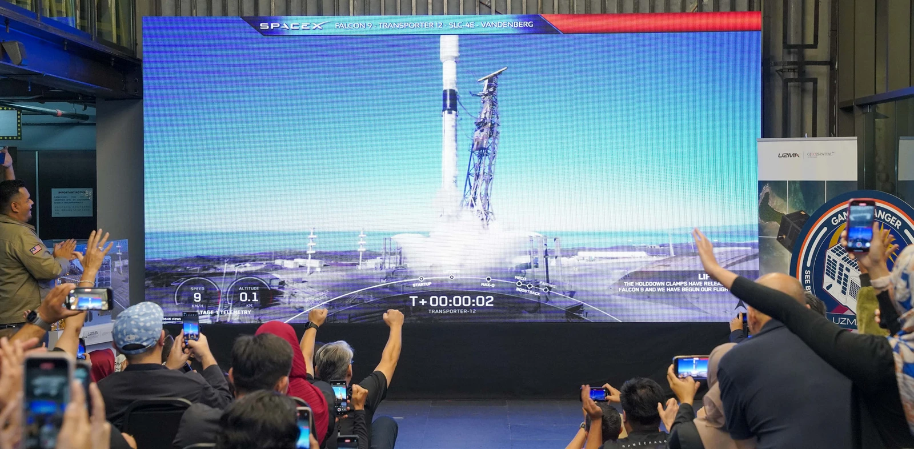
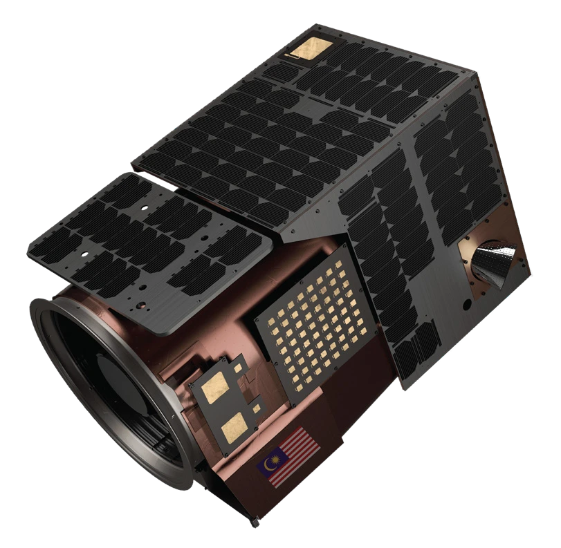
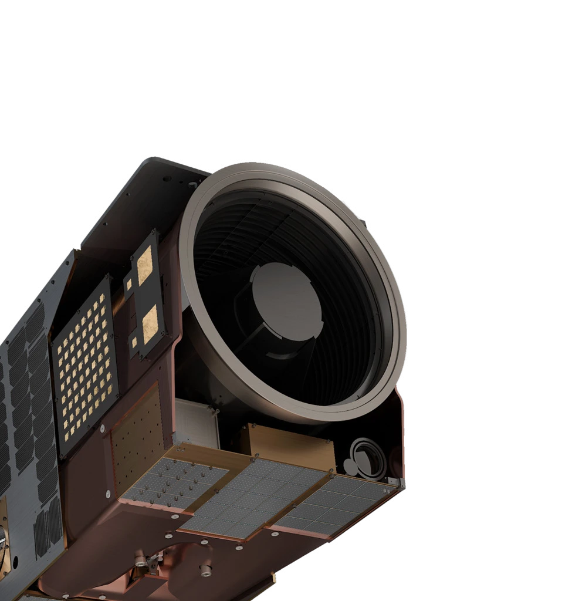
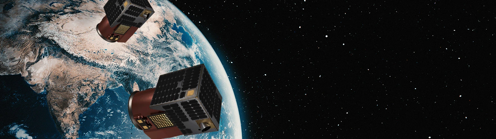
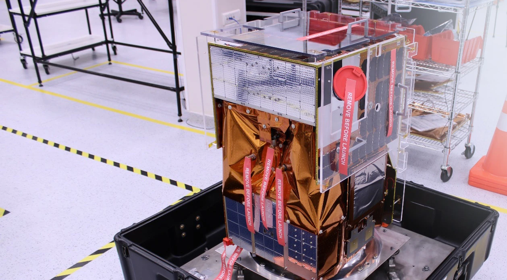

A major milestone was achieved with the successful launch of UzmaSAT-1 on January 15, 2025, aboard SpaceX’s Falcon 9 Transporter-12 from Vandenberg Space Force Base.

A new perspective from orbit
UzmaSAT-1 delivers high spatial resolution optical imagery with frequent revisits throughout the day. With the satellite operational in orbit, Geospatial AI is expanding its reach across agriculture, energy, infrastructure and environmental monitoring.
UZMASAT-1 specifications
- Mass: 45.4 kg.
- Dimensions: 508 mm × 575 mm × 813 mm.
- Average operating altitude: 460–525 km.
- Multispectral camera with sub-meter GSD and 6.5 km swath.
- Resolution: up to 50 cm.
Spectral bands
- Blue: 450–517 nm.
- Green: 517–583 nm.
- Red: 597–690 nm.
- Near-infrared: 759–890 nm.
In pictures
{kind=link}
{kind=link}
{kind=link}

{kind=link}
{kind=link}

{kind=link}
{kind=link}

{kind=link}
{kind=link}
{kind=link}
{kind=link}

{kind=link}
{kind=link}

{kind=link}
Read the complete source transcript
G A M E C H A N G E R
A major milestone was achieved with the successful launch of UzmaSAT-1 on January 15, 2025, aboard SpaceX’s Falcon 9 Transporter-12 from Vandenberg Space Force Base. UzmaSAT-1 delivers high spatial resolution optical imagery with frequent revisits throughout the day.
With the satellite now operational in orbit, we are expanding our reach and opening new opportunities for geospatial intelligence across various sectors and industries that rely on satellite-based insights such as agriculture, energy, infrastructure, and environmental monitoring.
UZMASAT-1 SPECIFICATIONS
45.4kg
MASS
508mm x 575mm x 813mm
DIMENSIONS
460km – 525km
AVERAGE OPERATION
Multispectral camera with sub-meter
GSD and 6.5km swath
Up to 50cm Resolution
Wavelengths:
Blue: 450-517 nm
Green: 517-583 nm
Read: 597-690 nm
Near-IR: 759-890 nm